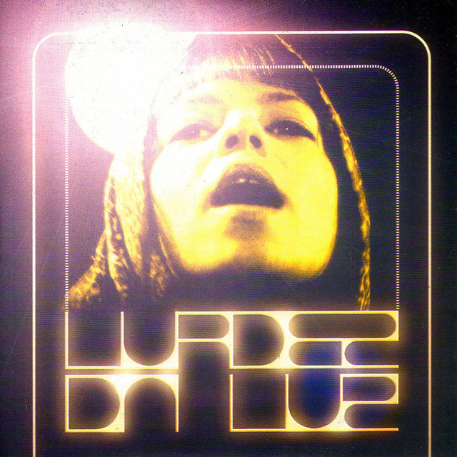
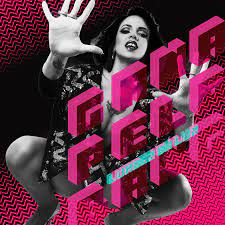
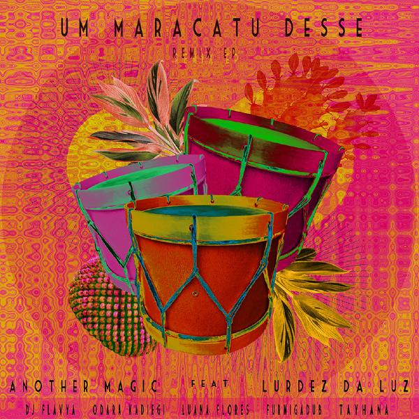
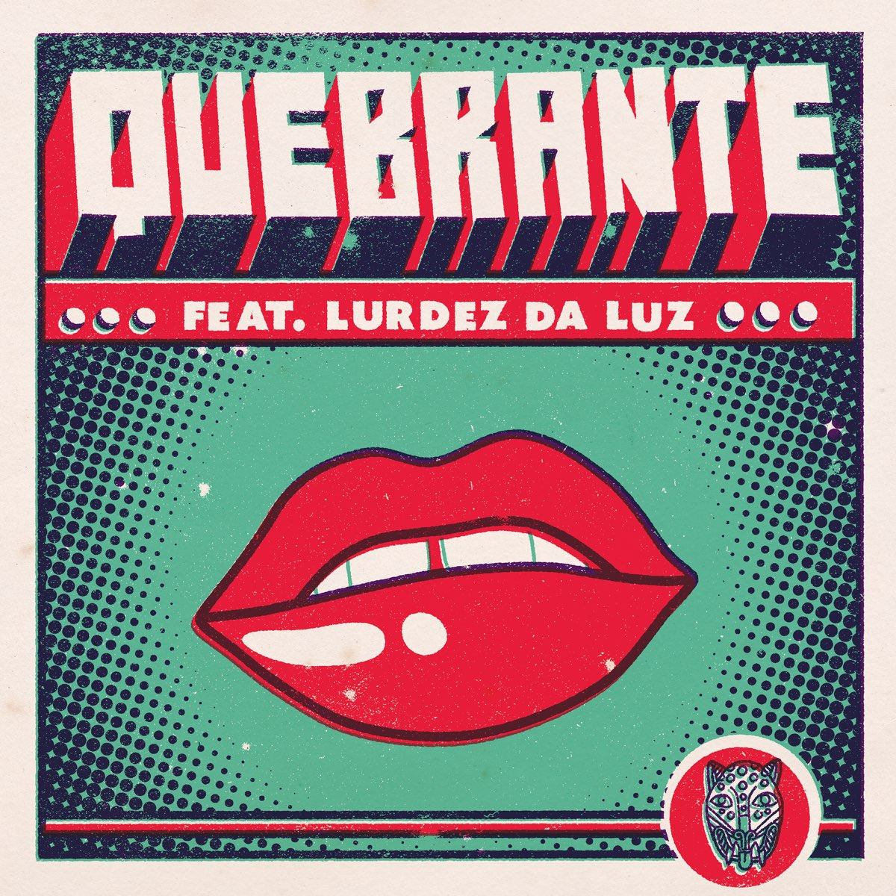
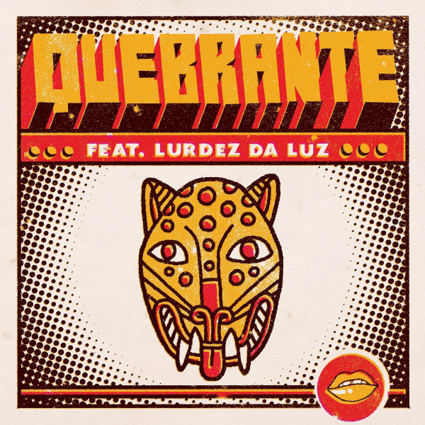

Discografia
Lurdez da Luz

Um dos principais centros financeiros da cidade, a avenida Paulista
também possui diversas opções de entretenimento. Endereço do Museu
de Arte de São Paulo, MASP, do Teatro Gazeta e muitos outros,
a região é de fácil acesso graças as diversas linhas de ônibus que
cruzam a avenida e a linha de metrô que passa por baixo dela.
Escute as músicas de disco pelo Spotify.
Gana pelo Bang

Um dos principais centros financeiros da cidade, a avenida Paulista
também possui diversas opções de entretenimento. Endereço do Museu
de Arte de São Paulo, MASP, do Teatro Gazeta e muitos outros,
a região é de fácil acesso graças as diversas linhas de ônibus que
cruzam a avenida e a linha de metrô que passa por baixo dela.
Escute as músicas de disco pelo Spotify.
Singles
A cidade de São Paulo foi a inspiração para Lurdez da Luz criar a temática do show “Acrux”. O título possui duplo sentido, pois remete a crucificação e a brilhante estrela de SP na constelação Cruzeiro do Sul (Crux), presente na bandeira do Brasil, que é a representação do poder feminino.
Nas palavras da própria artista,“Uso a cruz e a estrela como símbolos. “Acrux” veio como um tema complexo: foneticamente remete a crucificação e no meu caso eu juntei o pesado julgamento moral sobre as mulheres no patriarcado e o peso da cruz no ombro dessa culpa que nos jogam”, diz Lurdez. “É como se a crux fosse essa estrela guia que vem da força interior contra as mazelas que se abate sobre nós e transforma positivamente o exterior.”
Da Luz deixa claro que “Acrux” não é uma homenagem a São Paulo. É um olhar, uma narrativa feminina dos sons, paisagens e cheiros que exalam da capital paulista.
Escute as músicas de disco pelo
Spotify.
Um Maracatu Desse

“A gente queria conectar essa música com a situação política, mas não de uma forma polêmica. Mais de uma forma de amor pro povo, amor pelo Brasil que luta, celebrando a cultura que este governo não aguenta. Eu tive essa ideia de trocadilho com desse/desce e a Lurdez levou pra outro nível.”, elogia Thomas Arndt, do Another Magic.
Escute as músicas de disco pelo Spotify.
Modo Aleatório
“Íamos gravar na Luz onde eu cresci, porém, mesmo sendo só eu, diretor e maquiadora na equipe, não é momento de rua. Arte é essencial, porém nesse quadro que temos em São Paulo, essencial é ficar vivo! O centro tá triste, tá abandonado, muito mais pessoas morando na rua… Enfim, o ponto é fica em casa, certo? A música tem uma frase que diz: ‘meu corpo é minha casa’, então a partir daí escrevi o roteiro com ações que nos ajudam a manter a sanidade dentro de casa, mas pra não ficar mais um vídeo de registros da pandemia, coloquei cenas bem de clipe mesmo cantando pra câmera, não aquela coisa reality show, cenas mais lúdicas e figurino. Mandei pro diretor que é câmera e iluminação e tudo mais, e ele teve ideias melhores em cima das minhas e assim foi”, conta a artista.
Escute as músicas de disco pelo Spotify.
Vou Querer o Meu
“Íamos gravar na Luz onde eu cresci, porém, mesmo sendo só eu, diretor e maquiadora na equipe, não é momento de rua. Arte é essencial, porém nesse quadro que temos em São Paulo, essencial é ficar vivo! O centro tá triste, tá abandonado, muito mais pessoas morando na rua… Enfim, o ponto é fica em casa, certo? A música tem uma frase que diz: ‘meu corpo é minha casa’, então a partir daí escrevi o roteiro com ações que nos ajudam a manter a sanidade dentro de casa, mas pra não ficar mais um vídeo de registros da pandemia, coloquei cenas bem de clipe mesmo cantando pra câmera, não aquela coisa reality show, cenas mais lúdicas e figurino. Mandei pro diretor que é câmera e iluminação e tudo mais, e ele teve ideias melhores em cima das minhas e assim foi”, conta a artista.
Escute as músicas de disco pelo Spotify.
Beijinho
“Norteado pela mesma composição do EP homônimo de 2010, o trabalho de 10 faixas aos poucos se distancia da atmosfera inicial lançada por Da Luz, revelando ao público um material totalmente inédito. Mais do que um olhar atento sobre a periferia de São Paulo, Gana Pelo Bang dialoga de forma explícita com diferentes cenários, pessoas e principalmente ritmos nacionais. Uma espécie de passeio pela periferia brasileira sem necessariamente fugir do território urbano/cinza há décadas sustentado pela rapper – liricamente versátil em toda a construção do álbum.
Musica Instantânea
Por: Cleber Facchi 09/09/2014
Escute as músicas de disco pelo Spotify.
Quebrante feat. Lurdez da Luz

Pegasus
“Norteado pela mesma composição do EP homônimo de 2010, o trabalho de 10 faixas aos poucos se distancia da atmosfera inicial lançada por Da Luz, revelando ao público um material totalmente inédito. Mais do que um olhar atento sobre a periferia de São Paulo, Gana Pelo Bang dialoga de forma explícita com diferentes cenários, pessoas e principalmente ritmos nacionais. Uma espécie de passeio pela periferia brasileira sem necessariamente fugir do território urbano/cinza há décadas sustentado pela rapper – liricamente versátil em toda a construção do álbum.
Musica Instantânea
Por: Cleber Facchi 09/09/2014
Escute as músicas de disco pelo Spotify.
Quebrante feat. Lurdez da Luz

Hey Man
“Norteado pela mesma composição do EP homônimo de 2010, o trabalho de 10 faixas aos poucos se distancia da atmosfera inicial lançada por Da Luz, revelando ao público um material totalmente inédito. Mais do que um olhar atento sobre a periferia de São Paulo, Gana Pelo Bang dialoga de forma explícita com diferentes cenários, pessoas e principalmente ritmos nacionais. Uma espécie de passeio pela periferia brasileira sem necessariamente fugir do território urbano/cinza há décadas sustentado pela rapper – liricamente versátil em toda a construção do álbum.
Musica Instantânea
Por: Cleber Facchi 09/09/2014
Escute as músicas de disco pelo Spotify.